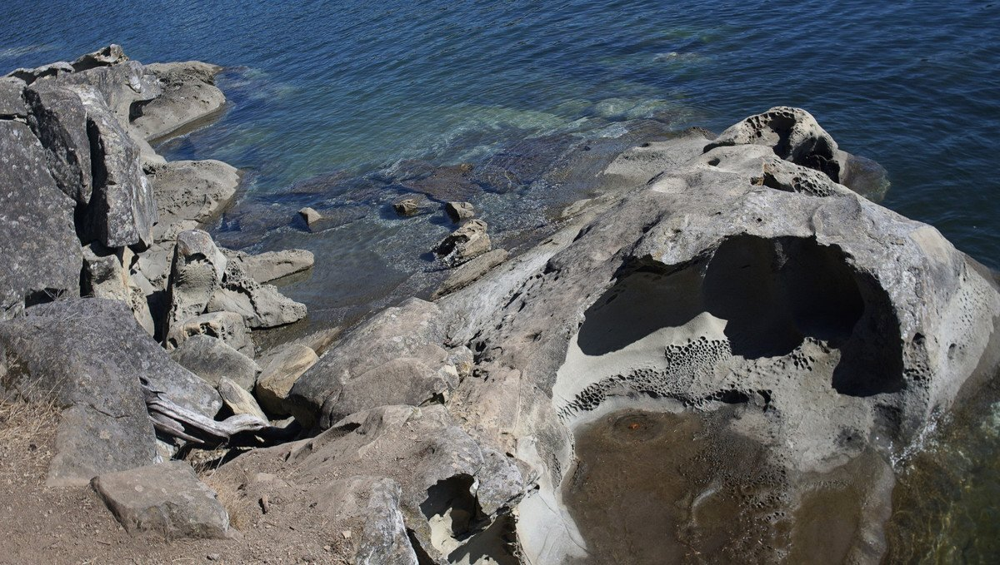

galiano

Note. What we refer to on this page as Galiano Island is the traditional, stolen, unceded land of the Penelakut, Lamalcha, Hwitslum and other Hul’qumi’num speaking peoples, as well as the ceded territories of Tsawwassen First Nation.
Galiano is our favorite place in the Gulf Islands. We make frequent visits to Montague Harbour. Why? Because it's big, and because it's big that makes it a dependable stop over. There will always be room to anchor here. Another plus, is that this bay is protected on all sides. It's a great place to stay without having to worry about the wind turning. Depth in the bay ranges from 30-45 feet, in mud.
There are moorings here, but not enough to clutter the area entirely. To the north there are moorings from BC Parks (14$/night in 2021), and there are private moorings the east and south. It's possible to moor onto the provincial park dock just north of the mooring field, at 2$/meter. We've never tried either, because there is always room to anchor, and because there is no Wifi signal there. Wifi is best in the south east corner of the bay.

The only thing to worry about here is other people and their anchoring skills. To be fair, this is a problem that all anchorages in the world share. We've seen many people anchoring badly, or needlessly too close to us, or others in this bay.
Montague Harbour Marina has a dinghy dock for land access, just ahead of The Crane and Robin restaurant. They also have a fuel dock. It is not possible to get water here. The island obtains its drinking water from a deep well, and in the summer there is not enough to spare (this is true for most of the Gulf Islands). There is a grocery store, but it's 1 hour walk away, next to the Hummingbird Pub. May be possible to catch the Hummingbird Pub bus get to the grocery, it stops by the marina up the road at the crossroads starting at 1700.
From the marina dinghy dock, it's a short 15-20 min walk to the Montague Harbour Provincial Park. The park is really worth visiting.
When the tide is low, it's possible to walk on the inside of Gray Peninsula by the shore on the rocks. There are plenty of barnacles, so it's near impossible to slip! The white shell beach on the north end of the park is lovely in the summer, shallow enough for the water to warm up a little. We've seen kids swimming here, but we didn't try it. Boats like to anchor off that beach, weather permitting.
Sea planes take off often in the harbor, but they're not a bother. It's fun to watch them.